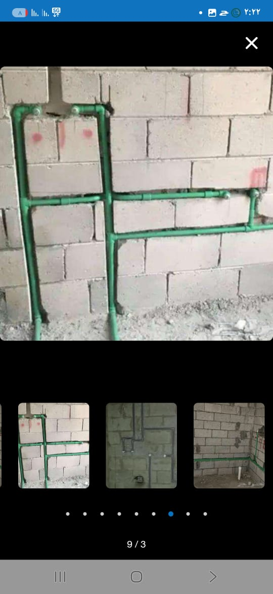
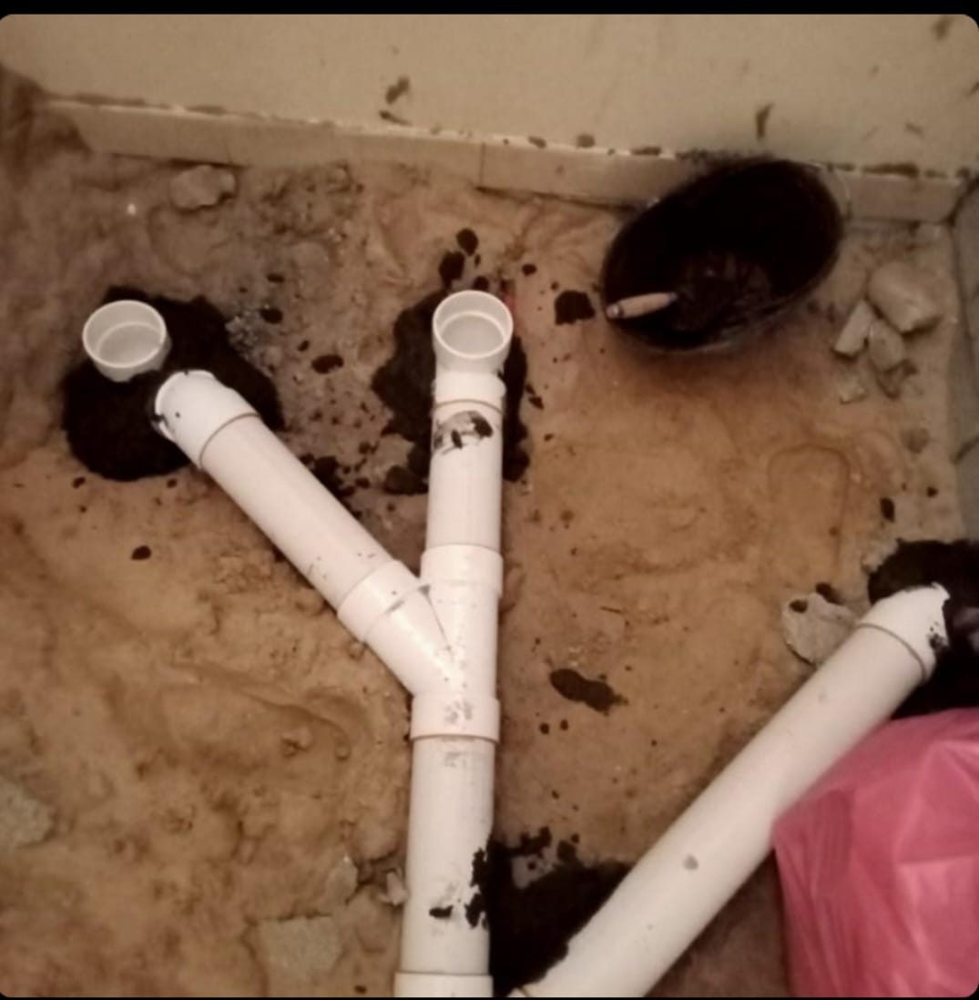
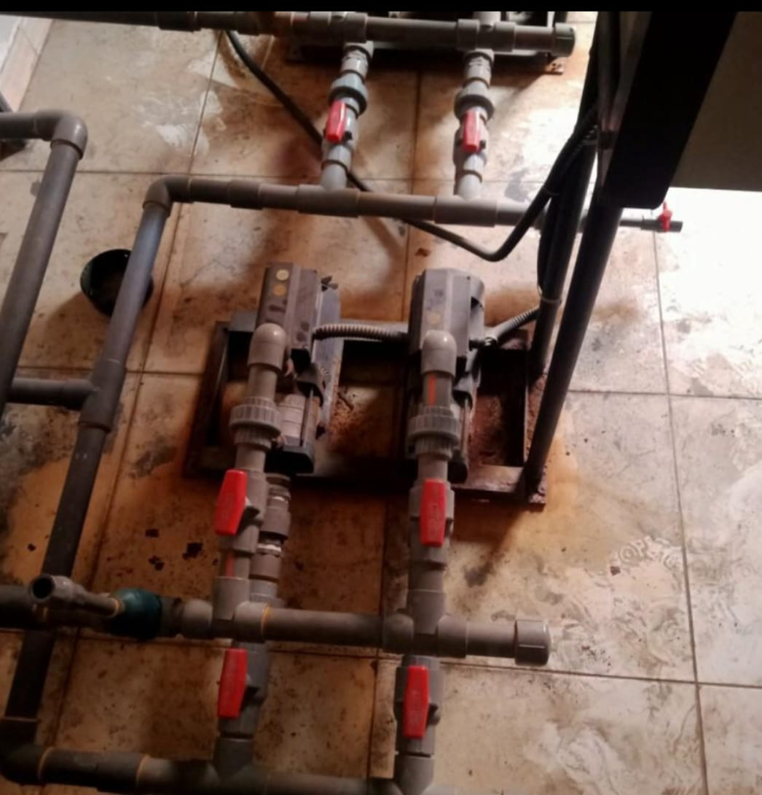

سباك منازل بالدمام متخصص في فحص وصيانة شبكات المياه وحل جميع المشاكل المتعلقة بالتسربات والانسدادات وتركيب الأحواض والخلاطات باحترافية كبيرة، يوفر لك خدمته على مدار ٢٤ ساعة في أي مكان داخل الدمام وبأسعار تنافسية تجدها دائمًا في متناول يديك مع توفير أجود الأنابيب وجميع قطع الغيار الأصلية التي يحتاج إليها العمل.
خدمة السباكة المنزلية في الدمام – أفضل سباك محترف بأسعار ممتازة
سباك منازل بالدمام
سباك منازل بالدمام هو أفضل سباك بالمملكة يعمل على تقديم مختلف خدمات فحص وصيانة وتركيب الأنابيب والخلاطات والأحواض يصل إليك أينما كنت، تمتاز خدمته بالعديد من الميزات التي تتعدد إلى كل من التالي:
-
قدرته على حل جميع مشاكل المياه
التي اكتسبها بسبب خبرته الكبيرة في العمل التي تعود لأكثر من ١٥ عام من العمل على حل أعقد مشاكل السباكة.
-
استخدام أحدث معدات الفحص والصيانة
يستخدم أحدث معدات فحص وصيانة شبكات المياه والأنابيب التي تناسب مختلف أنواع الأنظمة وتعمل على حل المشكلة في وقت قياسي.
-
الوصول السريع والاستجابة الفورية
يصل إلى العملاء بشكل سريع فور طلبه عند حدوث أي عطل مفاجئ ويعمل على كشف سبب المشكلة بكل احترافية وإصلاحها في الحال.
-
توريد أجود المستلزمات
يعمل على توريد جميع مستلزمات تركيب وصيانة شبكات المياه من أجود الخامات التي تتحمل الضغط والحرارة العالية.
-
أسعار مخفضة وتنافسية
يحدد سعر خدمة مخفض حتى أنه لا يناسب جودة الخدمة المقدمة ذلك حتى يحقق أعلى درجة من الاستفادة لكل من يستعين بخبرته.
افضل سباك منازل بالدمام
افضل سباك منازل بالدمام متخصص في تأسيس شبكات المياه الحديثة الخاصة بمختلف الأبنية والمنازل يعمل على توفير شبكة مياه تعمل بكفاءة ممتازة وآمنة ولا يمكن أن تصاب بأي عطل، ذلك من خلال التالي:
-
توصيل المياه بدقة
توصيل المياه من شبكة الإمدادات العمومية بكل دقة واحترافية وبأنابيب عالية الجودة.
-
عمل توصيلات آمنة
عمل توصيلات المياه من خلال الجدران بطريقة آمنة لمنع التسربات والتلف.
-
تركيب خلاطات عالية الجودة
تركيب خلاطات وصنابير عالية الجودة تدوم لسنوات دون أن تحتاج إلى تغييرها.
-
استخدام أجود الأنابيب
عمل شبكة المياه بأجود أنواع الأنابيب التي تتحمل الضغط العالي والتغيرات المناخية.
-
تركيب أحواض حديثة
يعمل على تركيب أجود أنواع الأحواض والمراحيض بتصاميم حديثة وعملية.
-
إجراءات أمان شاملة
يتخذ كل إجراءات الأمان ومنع حدوث أي تسربات أو مشاكل في شبكات المياه.
فني سباكة منازل بالدمام
فني سباكة منازل بالدمام ممتاز تجتمع فيه جميع المواصفات التي يبحث عنها كل عميل يريد الحصول على أفضل خدمة صيانة وفحص شبكات المياه فهو الأول في مجاله والذي يقبل على خدمته العديد من الأشخاص، ومن أهم تلك المواصفات:
-
الدقة والتركيز على التفاصيل
الدقة والتركيز على أدق التفاصيل الخاصة بالعمل لتحقيق قدر عالي من الأمان في توصيلات المياه بالمنازل.
-
اختيار أفضل قطع الغيار
الحرص على اختيار أحدث قطع غيار السباكة التي توفر جودة عالية من التوصيل والعزل لمنع التسربات.
-
الالتزام بالمواعيد
الالتزام بالمواعيد فهو لا يمكن أن يتأخر دقيقة واحدة عن الميعاد المتفق عليه مع العميل.
-
التركيب الصحيح والآمن
يحرص على تركيب كل شيء في مكانه المناسب بنفس القياس والمواصفات حتي يضمن لك توصيل صحيح وآمن للمياه.
-
كشف دقيق للمشاكل
يكتشف أسباب المشاكل بكل دقة وعن طريق استخدام أحدث الأدوات والأجهزة المخصصة لذلك.
-
إنجاز العمل بسرعة
يقوم بإنجاز العمل في وقت قياسي دون تأخير للحفاظ على وقت العميل والاستجابة على جميع طلبات العملاء الأخرى.
رقم سباك منازل بالدمام
رقم سباك منازل بالدمام متاح للرد على طلبك في أي وقت على مدار الساعة حال حدوث أي مشكلة في شبكات المياه أو الأنابيب الموجودة في المنزل، فهو في خدمتكم على مدار ٢٤ ساعة أيًا ما كان سبب ونوع المشكلة، فيمكنك طلبه لأي من التالي:
- حال انقطاع المياه عن المنزل بالكامل دون غيره بالمنطقة.
- حدوث أي تسرب في أي أنبوب توصيل مياه.
- الحاجة إلى صيانة أي نوع من الخلاطات والأحواض المنزلية.
- حال شراء أحواض أو خلاطات جديدة بالمنزل والرغبة في تركيبها على يد شخص متخصص.
- ضعف ضغط المياه لسبب غير معروف في المنزل.
- الرغبة في تركيب شبكة مياه جديدة عند القيام ببناء منزل جديد.
- انسداد البالوعات والمجاري والرغبة في تنظيفها وإصلاحها.
سباك ٢٤ ساعة الدمام
سباك ٢٤ ساعة الدمام تجده في خدمتك على مدار الساعة يصل إليك حال حدوث أي مشكلة مفاجئة في شبكات المياه جاهز لأي تحديات مهما كانت معقده متعلقة بتوصيل المياه، تغطي خدمته كافة أنحاء الدمام ويعمل فور وصوله إليك على كل من التالي:
-
إعادة التوصيل والتحقق
إعادة توصيل المياه للمنزل والتأكد من سلامة جميع الأنابيب والخلاطات والصنابير العمومية للمنزل.
-
الصيانة الدورية
تحديد مواعيد دورية للفحص على شبكة المياه الخاصة بالمنزل بالكامل والتأكد من سلامتها لتفادي التعرض لأي عطل مفاجئ وتوريد أنواع الخلاطات والأحواض الحديثة.
معرض صور خدمات السباكة
استعرض أعمالنا الاحترافية والمشاريع الناجحة في مجال الخدمات السباكية


